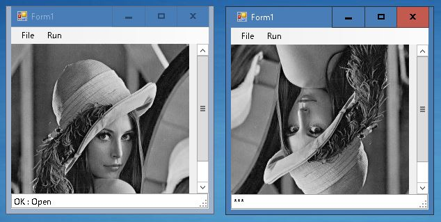

2nd January 2023 at 11:16am
Bitmapクラスには、オブジェクトを固定するメンバ関数LockBits()があります。
そして、固定時には、IntPtr（ポインタ情報）を得ることができます。
これを利用すれば、Bitmapクラス → ポインタ（unsigned char配列）のマーシャリングを行うことが可能です。
まず、C++/CLIにて以下のようなBitmapクラスを固定するためのクラスを作成します。
#pragma once
using namespace System;
namespace MyApp
{
public ref class lockBitmap
{
private:
System::Drawing::Bitmap^ mSrc;
System::Drawing::Imaging::BitmapData^ mSrcData;
System::Drawing::Imaging::PixelFormat mPxFrmt;
int mWidth;
int mHeight;
IntPtr mPtr;
public:
// コンストラクタ
lockBitmap(System::Drawing::Bitmap^ ini)
{
if (ini == nullptr)
return;
if (mSrc != nullptr)
this->Free();
mSrc = ini;
mWidth = mSrc->Width;
mHeight = mSrc->Height;
mPxFrmt = mSrc->PixelFormat;
// Bitmapクラスのロック
System::Drawing::Rectangle rect = System::Drawing::Rectangle(0, 0, mWidth, mHeight);
mSrcData = mSrc->LockBits(rect, System::Drawing::Imaging::ImageLockMode::ReadOnly, mPxFrmt);
mPtr = mSrcData->Scan0;
}
// ロック解除
void Free()
{
if (mSrc == nullptr)
return;
// Bitmapクラスのロック解除
mSrc->UnlockBits(mSrcData);
mSrc = nullptr;
mWidth = 0;
mHeight = 0;
mPtr = IntPtr::Zero;
}
// ポインタ取得
unsigned char* GetPointer()
{
return (unsigned char*)mPtr.ToPointer();
}
};
}このクラスを使えば、C++/CLI内で簡単にポインタを取り出すことができます。
// ------------------------------------------------
// Bitmapクラス"img"から、ポインタ"ptr_Img"を取り出す例
// ------------------------------------------------
System::Drawing::Bitmap^ img;
・・・
// ロックする
MyApp::lockBitmap^ pinImg = gcnew MyApp::lockBitmap(img);
// ポインタの取り出し
unsigned char* ptr_Img = pinImg->GetPointer();
・・・アンマネージドな関数の引数として使う
//ロック解除
pinImg .Free();※ System::Drawingの参照の追加が必要です。
※ 処理が終わったら、Free()を必ず実行すること。
試してみます
（03）C#から、C++の関数の実行（関数）の手順で、配列を逆転する関数を作成します。
C#で読み込んだ画像から、上のlockBitmapを使って配列を取り出して、配列を逆転する関数に入れます。
私が作ったサンプルプログラムは、ここにあります。（サンプルプログラムにおける警告について）
